Ugyanazokból a valódi, feltöltött munkafotókból építve — mind az öt máshogy szervezi a sok képet: van, ami fülekre bontja, van, ami egy hosszú, vegyes rácsban mutatja meg mindet.
01 · Kategória fülek (tabs)
Nincs hosszú görgetés — kattints egy fülre, csak az adott kategória képei látszanak. A legkompaktabb, leginkább "katalógus"-szerű megoldás.
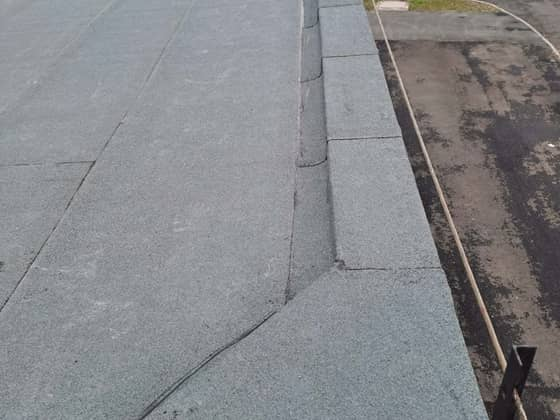
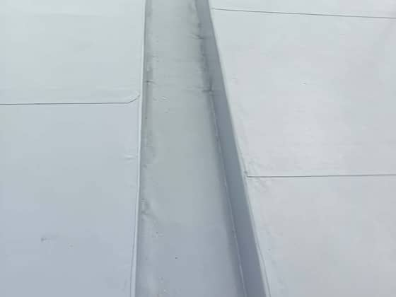
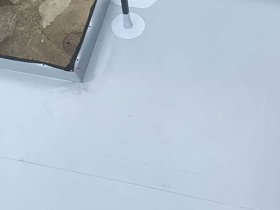
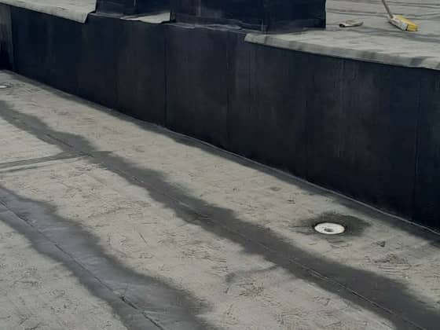
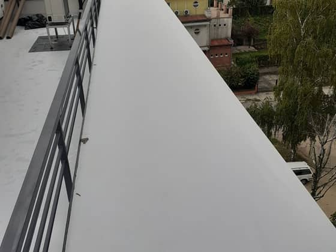
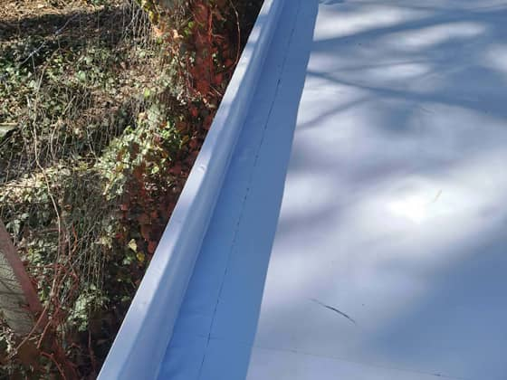
02 · Masonry + szűrő chipek
Pinterest-stílusú, változó magasságú rács, minden kép egyben — chipekkel lehet rászűrni egy kategóriára. Vizuálisan a leggazdagabb, "portfólió" jellegű.
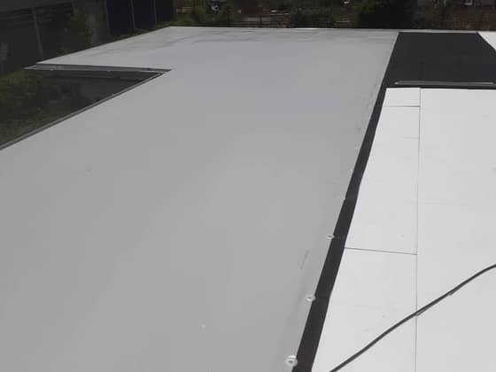
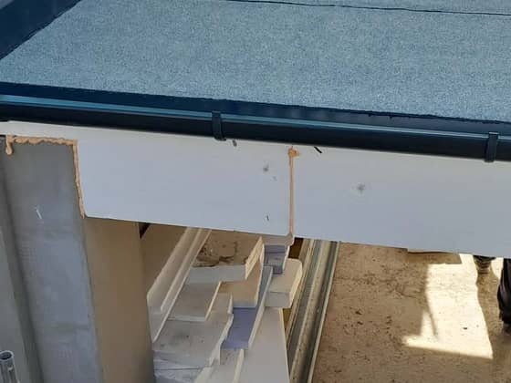
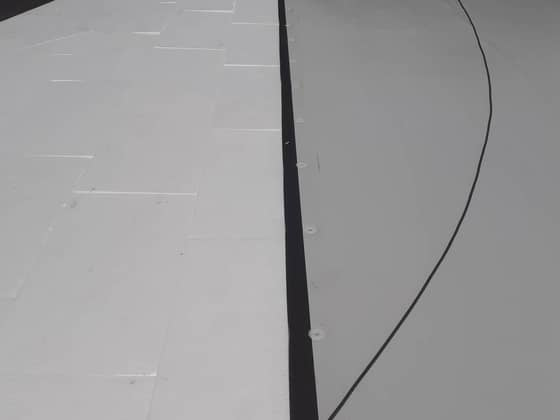
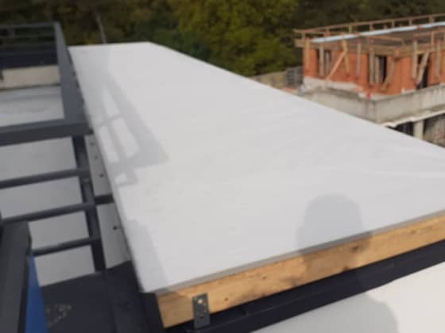
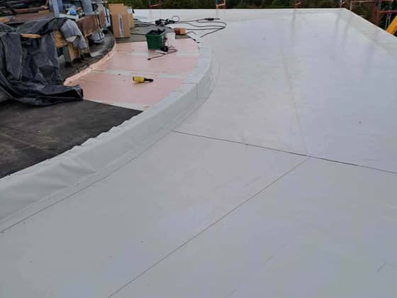
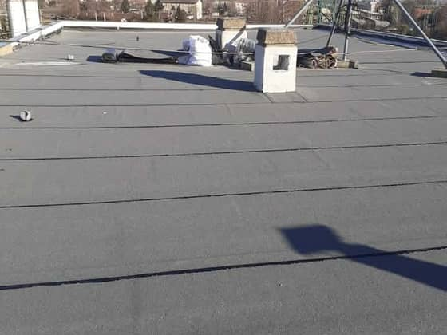
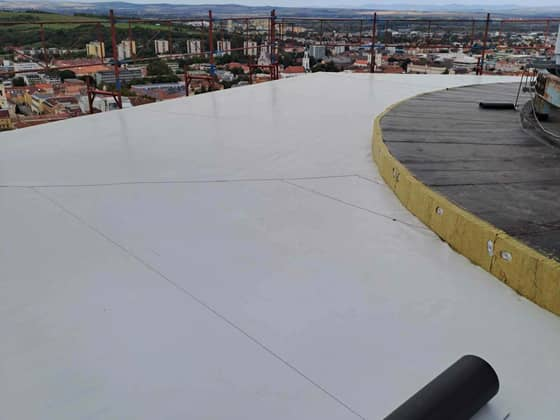
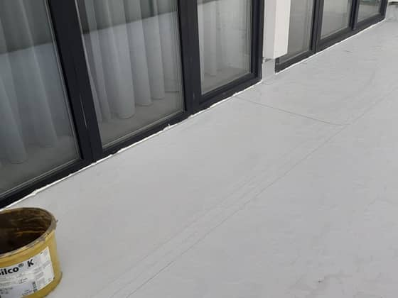
03 · Kiemelt kép + kisrács (magazin)
Kategóriánként egy nagy, kiemelt kép vezet, mellette kisebb támogató képek — mint egy magazin fotóriportja, minden kategóriának van egy "borítóképe".
Lapostető szigetelés
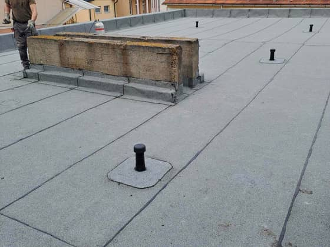
Bádogozás és szegélyezés
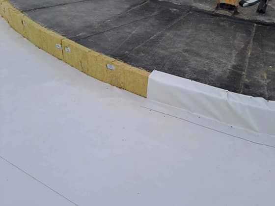
04 · Vízszintes görgetős kategória-sávok
Minden kategória egy önálló, oldalra görgethető sor — mobilon ez a legtermészetesebb gesztus, és jól bővíthető új képekkel anélkül, hogy a rács szétesne.
Lapostető szigetelés
24 kép
Bádogozás és szegélyezés
10 kép
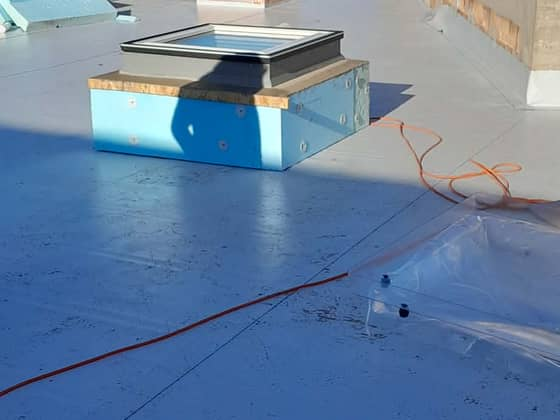
Erkély és terasz
3 kép
05 · Bento vegyes rács
Nincs kategória-elválasztás — egyetlen nagy, változó méretű csempés rács, ahol néhány erős kép kiemelt méretet kap. Legmerészebb, leginkább "portfólió showreel" hatású.